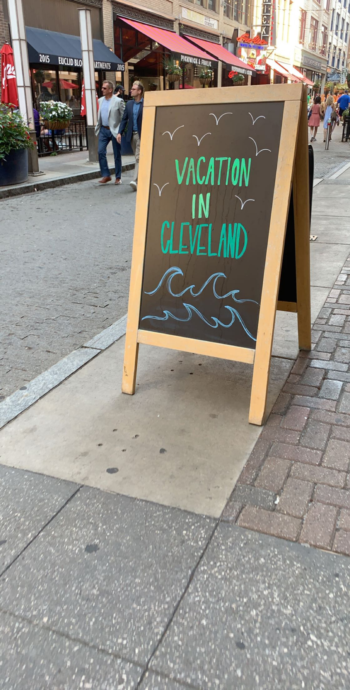

Downtown Cleveland

The Cleveland Browns are notorious for their constant organizational turmoil and losing streak. Despite the negative press, the Browns stadium, FirstEnergy Stadium, is a great football facility. This is the view of the stadium from my dad's office window.

The Cleveland Indians have a much better record than the Browns. The field, Progressive Field, is a great place to watch a baseball game.
Food in Downtown Cleveland
